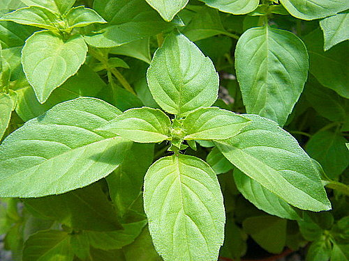

1、種子泡常溫水1~2小時
2、椰糠注水40ml待其膨脹
3、將椰糠填至塑膠盆九分滿處
4、放入泡過水的種子後覆上剩下的椰糠
5、待植物成長後再更換較大的盆栽種植
羅勒（學名：Ocimum basilicum）
可用於烹調的香草，大多數是一年生植物，一些是多年生植物
包括非洲藍羅勒和泰國羅勒（Ocimum basilicum var. thyrsiflora）
臺灣俗稱的「九層塔」，客語俗稱的「七層塔」為羅勒的一種。
圖源：http://blog.xuite.net/talk2herb/nick/120321993-%E6%AA%B8%E6%AA%AC%E7%BE%85%E5%8B%92+Lemon+Basil
網頁製作人：CHING-HAN 網頁開始撰寫日：２０１８年４月２３日